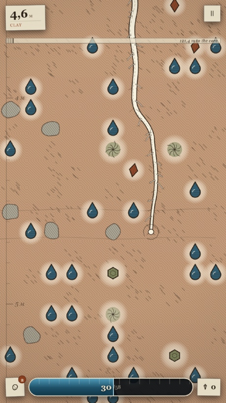
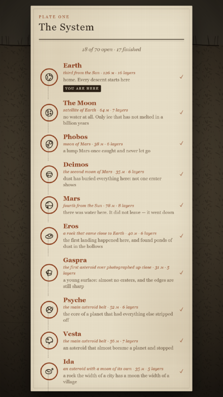
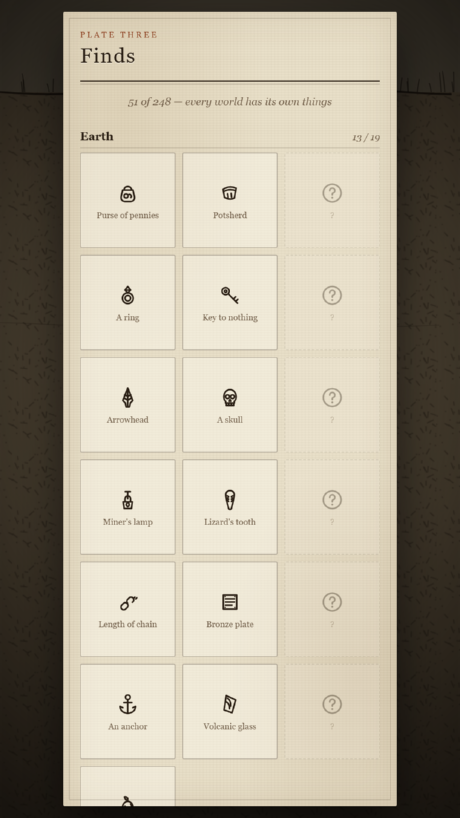

Game · Android
Roots
Guide a root from the surface to the planet's core while the water lasts.
Roots is a game where you guide a root downward, from the surface to the core of a planet. The root grows where your finger leads it. Every cell uses water, and the deeper you go, the more it takes. Drops, springs and ice along the way refill it. Rocks have to be bypassed, and slabs have a single gap. If the water runs out before the root reaches the core, the descent starts over.



What's inside
70 worlds
Earth, the Moon, Mars, the moons of Jupiter and Saturn, and more. Each has its own layers and its own finds.
248 finds
They lie in the rock on the way down and are collected in a journal.
Herbarium
When a world is completed, a plant grows on its surface and is added to the herbarium.
Upgrades
Upgrades for the root: a larger water supply, spare tubers and more.
Daily world
One world per day, the same for every player.
5 languages
English, Russian, Spanish, German, Portuguese.
Data and internet
Works offline, no registration needed. Progress is stored on the device. The only network traffic is the ad network's requests.
Details are in the privacy policy.